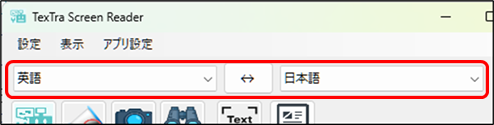

翻訳
翻訳の言語を選択してください。

画面上の翻訳したいテキストをフレーム画面で囲みます。
翻訳ボタンをおします。

※
テキストの読み取り（OCR）、読み上げの機能はWindowsの機能を利用しています。
指定された言語について、Windowsに機能がインストールされていない場合、
本機能は利用できません。
対応する言語の追加方法につきましては、Windowsの設定をご確認ください。
※
対象の文字をより大きく表示するようにすると、OCRでの読み取りが成功しやすくなります。
手動でテキストを入力して、翻訳を行うこともできます。